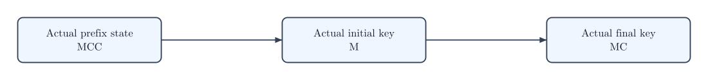
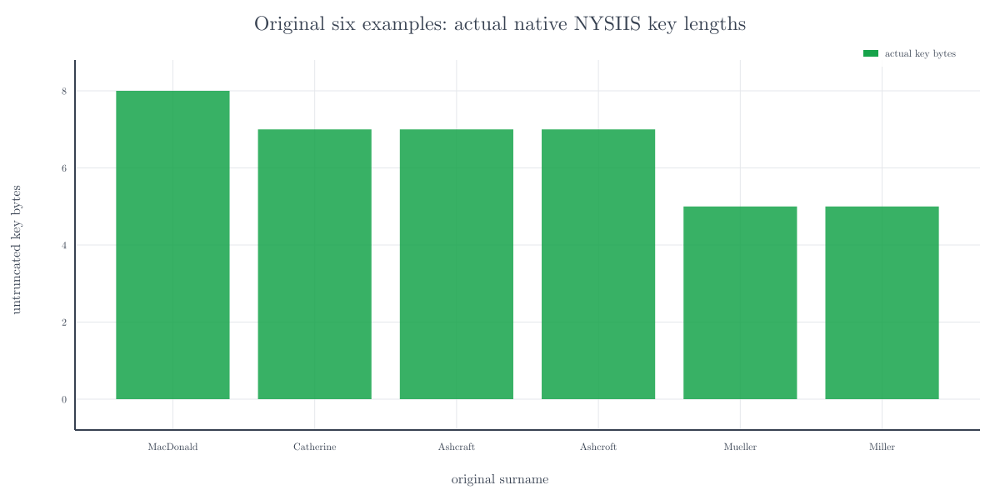
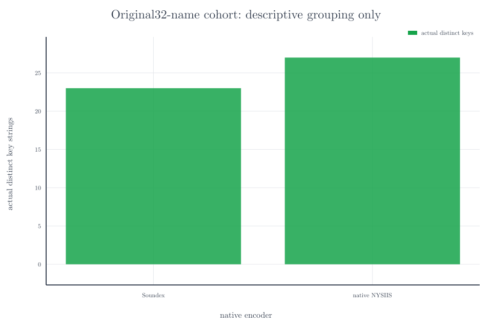
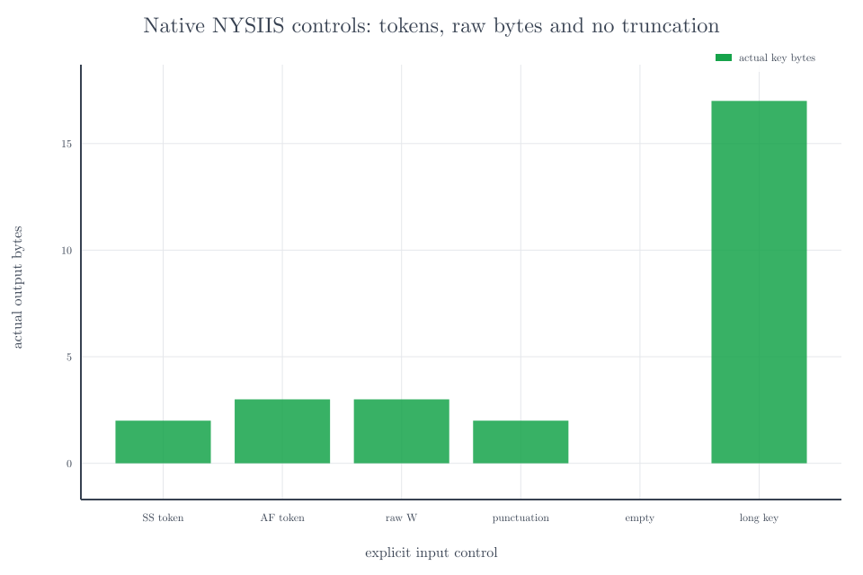

Native NYSIIS: observable rewrite keys
Abstract
Produce the library’s variable-length NYSIIS-style byte key and inspect the actual decisions that create it. The original six examples and32-surname comparison are retained through canonical helpers. Owned traces make prefix/suffix rewriting, whole-token suppression and cleanup visible, while the report distinguishes descriptive collision counts from phonetic accuracy or identity ground truth.
Specify the native rule variant before comparing keys
The producer uppercases bytes with the current C locale, rewrites prefixes and suffixes, retains the first rewritten byte as the initial key, processes interior tokens and applies three cleanup rules. Prefixes are MAC→MCC,KN→N,K→C,PH/PF→FF and SCH→SSS. Suffixes IE/EE becomeY, while DT/RT/RD/NT/ND becomeD. Interior branches include EV→AF, vowels→A,Q→G,Z→S,M→N,KN→N,K→C,SCH→SS,PH→F and context-dependent H/W folding.
These are the actual native rules, which are preserved during conversion. A whole token is suppressed only when its last byte equals the current key’s last byte. Internal multi-byte replacements are not compressed character by character, and H/W rules consult predecessor bytes in the rewritten input rather than a separately normalized key. Consequently this implementation can differ from other NYSIIS variants. It does not truncate to six characters, filter nonletters or normalize Unicode. Punctuation, NUL and high bytes may survive, so even an “alphabetic” output guarantee would be too strong for arbitrary input.
A hand-checkable MAC trace
Prefix MAC becomesMCC. The first rewritten byteM starts the key; the firstC appends and the secondC token is suppressed. No cleanup rule then changesMC. The diagram uses actual prefix, first-byte and final states, and the table shows every actual decision—including unchanged stages—rather than a report-side encoder.
#include <dm/dm.hpp>
int main() {
std::filesystem::create_directories("build");
auto t = dm::algorithms::nysiis_trace("MAC");
dm::graphics::Diagram d;
d.node("rewrite", {0, 0},
std::format("Actual prefix state\n{}", t.steps[0].after));
d.node("first", {7, 0},
std::format("Actual initial key\n{}", t.steps[2].after));
d.node("final", {14, 0}, std::format("Actual final key\n{}", t.analysis.key));
d.edge("rewrite", "first").edge("first", "final");
std::print("| actual stage | actual rule | before | replacement token | appended | after |\n| --- | --- " "| --- | --- | --- | --- |\n");
for (auto &s : t.steps)
std::print("| {} | {} | `{}` | `{}` | {} | `{}` |\n", s.stage, s.rule,
s.before.empty() ? "(empty)" : s.before,
s.token.empty() ? "(empty)" : s.token, s.appended,
s.after.empty() ? "(empty)" : s.after);
d.save_svg("build/nysiis_tiny.svg");
}| actual stage | actual rule | before | replacement token | appended | after |
|---|---|---|---|---|---|
| prefix | MAC | MAC | MCC | false | MCC |
| suffix | none | MCC | (empty) | false | MCC |
| first | first-byte | (empty) | M | true | M |
| interior | literal | M | C | true | MC |
| interior | literal | MC | C | false | MC |
| cleanup | none | MC | (empty) | false | MC |
| cleanup | none | MC | (empty) | false | MC |
| cleanup | none | MC | (empty) | false | MC |

Retain the original six displayed surnames
MacDonald,Catherine,Ashcraft,Ashcroft,Mueller andMiller retain their original spellings and order. The native comparison helper calls the current canonical Soundex and NYSIIS producers; the table displays their actual keys. The figure shows actual NYSIIS key lengths, making variable-length output concrete without assuming that a longer key is more accurate.
Equal keys are candidates for a broader matching process, not proof of equal pronunciation or identity. Distinct keys likewise do not prove that names should remain separate. The original examples of merged spellings therefore remain observations rather than labeled successes.
#include <dm/dm.hpp>
int main() {
std::filesystem::create_directories("build");
auto c =
dm::algorithms::nysiis_compare_names(dm::algorithms::nysiis_demo_examples());
std::vector<double> lengths;
std::print("| original name | actual Soundex | actual native NYSIIS | NYSIIS bytes |\n| --- | --- | --- " "| ---: |\n");
for (std::size_t i = 0; i < c.names.size(); ++i) {
lengths.push_back(c.nysiis_keys[i].size());
std::print("| {} | `{}` | `{}` | {} |\n", c.names[i], c.soundex_keys[i],
c.nysiis_keys[i], c.nysiis_keys[i].size());
}
auto p = dm::graphics::RPlot::barplot(lengths, c.names, "actual key bytes");
p.size(1200, 600).title("Original six examples: actual native NYSIIS key lengths").x_label("original surname").y_label("untruncated key bytes").save_svg("build/nysiis_original.svg");
}| original name | actual Soundex | actual native NYSIIS | NYSIIS bytes |
|---|---|---|---|
| MacDonald | M235 | MCDANALD | 8 |
| Catherine | C365 | CATARAN | 7 |
| Ashcraft | A261 | ASCRAFT | 7 |
| Ashcroft | A261 | ASCRAFT | 7 |
| Mueller | M460 | MALAR | 5 |
| Miller | M460 | MALAR | 5 |

Retain all32 names and describe the observed grouping
The original illustrative cohort contains32 surnames, from Anderson through Robinson. Every name and both actual keys are printed below. Distinct-key counts describe how many groups the selected list produces. Equal-code pair counts sum the number of unordered row pairs in each group; they are not counts of false matches without external labels. Repeating an input row would legitimately add another row pair, so the cohort’s identity and weighting matter.
More distinct keys on this selected list can reflect fewer merges, more splits, or both. The original conclusion that a taller bar establishes fewer unrelated-name errors or preserved true homophones does not follow from these unlabeled data. The old abstract’s character-for-character Jellyfish validation on a 4,000-word corpus was also not performed by its report program; no such conformance claim is carried forward.
#include <dm/dm.hpp>
int main() {
std::filesystem::create_directories("build");
auto c =
dm::algorithms::nysiis_compare_names(dm::algorithms::nysiis_demo_names());
std::print("| original cohort name | actual Soundex | actual native NYSIIS |\n| --- | --- | --- |\n");
for (std::size_t i = 0; i < c.names.size(); ++i)
std::print("| {} | `{}` | `{}` |\n", c.names[i], c.soundex_keys[i],
c.nysiis_keys[i]);
std::print("\n| encoder | actual distinct keys | actual equal-code unordered row pairs |\n| --- | ---: " "| ---: |\n| Soundex | {} | {} |\n| native NYSIIS | {} | {} |\n",
c.distinct_soundex, c.equal_soundex_pairs, c.distinct_nysiis,
c.equal_nysiis_pairs);
auto p =
dm::graphics::RPlot::barplot({double(c.distinct_soundex),
double(c.distinct_nysiis)},
{"Soundex", "native NYSIIS"},
"actual distinct keys");
p.title("Original32-name cohort: descriptive grouping only").x_label(
"native encoder").y_label("actual distinct key strings").save_svg(
"build/nysiis_cohort.svg");
}| original cohort name | actual Soundex | actual native NYSIIS |
|---|---|---|
| Anderson | A536 | ANDARSAN |
| Andrews | A536 | ANDRAE |
| Ashcraft | A261 | ASCRAFT |
| Ashcroft | A261 | ASCRAFT |
| Baker | B260 | BACAR |
| Barker | B626 | BARCAR |
| Brown | B650 | BRAON |
| Braun | B650 | BRAN |
| Carter | C636 | CARTAR |
| Cartwright | C636 | CARTWRAGT |
| Davidson | D132 | DAVADSAN |
| Davis | D120 | DAV |
| Edwards | E363 | EDWARD |
| Evans | E152 | EVAN |
| Fisher | F260 | FASAR |
| Fischer | F260 | FASSAR |
| Gauss | G200 | G |
| Gaus | G200 | G |
| Harris | H620 | HAR |
| Harrison | H625 | HARASAN |
| Jackson | J250 | JACSAN |
| Johnson | J525 | JANSAN |
| Johnston | J523 | JANSTAN |
| Kelly | K400 | CALY |
| Kelley | K400 | CALY |
| Miller | M460 | MALAR |
| Mueller | M460 | MALAR |
| Nelson | N425 | NALSAN |
| Nielsen | N425 | NALSAN |
| Peterson | P362 | PATARSAN |
| Pearson | P625 | PARSAN |
| Robinson | R152 | RABANSAN |
| encoder | actual distinct keys | actual equal-code unordered row pairs |
|---|---|---|
| Soundex | 23 | 9 |
| native NYSIIS | 27 | 5 |

Make token and byte-policy differences visible
The controls AASCH andAEV expose whole-token behavior: replacing an internal SCH withSS orEV withAF can retain repeated letters inside or across the token boundary. LEW exposes the raw-predecessor W rule. Punctuation and an empty string demonstrate the actual byte-domain contract, while a repeated long name shows that no fixed output truncation is applied. These finite controls document this native variant rather than asserting equality with a different library’s algorithm.
Cleanup removes one trailingS when the key has more than one byte, folds a trailingAY toY, then removes one trailingA if more than one byte remains. The order matters, and the actual trace retains before/after states for each rule even when no change occurs.
#include <dm/dm.hpp>
int main() {
std::filesystem::create_directories("build");
std::vector<std::string> inputs{"AASCH", "AEV", "LEW", "A-A", "",
"MacDonaldMacDonald"}, labels{"SS token",
"AF token",
"raw W",
"punctuation",
"empty",
"long key"};
std::vector<double> lengths;
std::print("| control | original bytes | actual native key | actual output bytes | actual interior " "tokens | whole tokens suppressed | actual capture units |\n| --- | --- | --- | ---: | ---: " "| ---: | ---: |\n");
for (std::size_t i = 0; i < inputs.size(); ++i) {
auto t = dm::algorithms::nysiis_trace(inputs[i]);
lengths.push_back(t.analysis.key.size());
std::print("| {} | `{}` | `{}` | {} | {} | {} | {} |\n", labels[i],
inputs[i].empty() ? "(empty)" : inputs[i],
t.analysis.key.empty() ? "(empty)" : t.analysis.key,
t.analysis.key.size(), t.analysis.interior_tokens,
t.analysis.suppressed_tokens, t.captured_entries);
}
auto p = dm::graphics::RPlot::barplot(lengths, labels, "actual key bytes");
p.title("Native NYSIIS controls: tokens, raw bytes and no truncation").x_label("explicit input control").y_label("actual output bytes").save_svg("build/nysiis_controls.svg");
}| control | original bytes | actual native key | actual output bytes | actual interior tokens | whole tokens suppressed | actual capture units |
|---|---|---|---|---|---|---|
| SS token | AASCH | AS | 2 | 2 | 1 | 163 |
| AF token | AEV | AAF | 3 | 1 | 0 | 135 |
| raw W | LEW | LAE | 3 | 2 | 0 | 161 |
| punctuation | A-A | A- | 2 | 2 | 0 | 158 |
| empty | (empty) | (empty) | 0 | 0 | 0 | 0 |
| long key | MacDonaldMacDonald | MCDANALDNACDANALD | 17 | 17 | 1 | 888 |

Ownership, capture cost and references
Ordinary encoding is O(N) byte work and output/working storage, with safe unsigned-byte C-library case conversion. It retains no caller references and changes no locale; results depend on the process’s current C locale. Complete byte strings, including embedded NUL or non-ASCII bytes, are accepted. This is not Unicode phonetic normalization.
The owned trace retains original, uppercase, rewritten and final-key bytes. Each actual decision additionally retains its stage/rule labels, full before/after strings and token, plus one logical record unit. Every retained byte/record is admitted before copying; default1000000 units and zero disables. Full growing-key snapshots can cost O(N²), so trace size is not claimed linear merely because ordinary encoding is linear. No partial trace is returned on quota failure. Cohort comparison defaults to1000000 rows and uses balanced-map key comparisons whose byte cost depends on key lengths.
Apache Commons Codec NYSIIS documentation supplies context for a separate implementation, not an asserted oracle match. The explicit native rule contract and actual histories are the authority for this report. Descriptive group counts remain distinct from verified pronunciation/identity accuracy or a universal superiority claim.
Verification
This ten-report batch passes75 CTest cases,22 directly instrumented ASan/UBSan
cases,122 compiled and executed public examples,538/538 scoped documentation
definitions and ten representative clangd hovers. Independent Python
arbitrary-precision arithmetic verifies69365 captured division records
with656460 checks; native independent polynomial, geometry, finite-range, graph,
ranking and callback checks cover the remaining producers. Frozen valid-input
comparisons preserve Neville recurrences, Newton result/callback paths, complete
byte encodings, switch routes and NSGA-II complete objective-call
sequences/final fronts. Ten checkout headers and ten byte-identical installed
development headers compile independently; an installed-header native consumer
links and runs. All40 complete programs execute, and40 native figures have been
visually reviewed; HTML/Markdown exports preserve computed rows/prose and
identical image bytes. Checks are scoped native checks, not an installation
claim for every language binding. Receipts:
build/mepml-conversion/batch-254-263/.